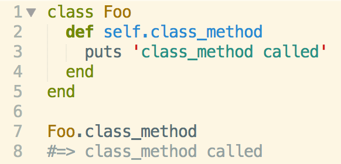
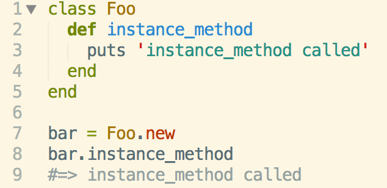

What are they?
Class methods are methods that can only be called on a class. They are different from instance methods in that instance methods are called on an instance of a class. Compositionally they are very close as both are created inside a class. However class methods start with selfand then the method name. Take a look at the picture below.
Instance methods do not need the self when defining the method name. Take a look below.
